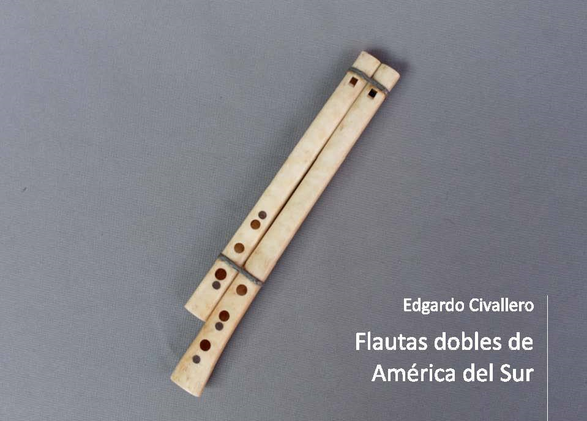

Flautas dobles de América del Sur
Inicio > Libros digitales sobre música > Flautas dobles de América del Sur
Cómo citar este trabajo: Civallero, Edgardo (2021). Flautas dobles de América del Sur. 2.ed.rev. Bogotá: Wayrachaki Editora.
Descargar en PDF.
Este libro es un estudio organológico y etnográfico que aborda uno de los tipos de aerófonos más raros y menos documentados del continente. En sus páginas se rastrea la presencia, morfología y significados de las flautas dobles —instrumentos compuestos por dos tubos sonoros soplados simultáneamente— en distintos puntos de Sudamérica, con especial atención a Ecuador, Perú, Bolivia y Brasil. El análisis combina la descripción técnica con una lectura simbólica del soplo y de la duplicación sonora como gesto cultural y ritual.
Estas flautas se sitúan dentro de una genealogía más amplia, que enlaza las tradiciones europeas, mediterráneas y asiáticas con las expresiones americanas. Recuerda que el fenómeno de los tubos múltiples ha sido común a muchas culturas —desde los Balcanes y el Cáucaso hasta el Próximo Oriente— y que en América se remonta al México prehispánico, donde existieron flautas dobles, triples e incluso cuádruples de cerámica. En Sudamérica, sin embargo, su presencia es más discreta, aunque hallazgos arqueológicos de silbatos dobles de piedra, hueso o arcilla confirman que este principio acústico no era desconocido. Los pocos ejemplos históricos —como los "silbatos mataco" o kanohí de los Wichí del Chaco argentino, descritos por Izikowitz en 1934— marcan el punto de partida de un itinerario que se sigue a través de un mapa fragmentario de supervivencias.
En Ecuador, las flautas dobles adoptan la forma de la dulzaina, un instrumento compuesto por dos tubos de pico desiguales en longitud y digitación. Tradicionalmente fabricadas en hojalata, las dulzainas fueron utilizadas en los rituales fúnebres ayanfaile de la provincia de Azuay y en otras celebraciones indígenas, acompañadas por chirimías, bocinas y tambores. Con el tiempo, el metal fue reemplazado por caña o madera, y más tarde por pares de flautas dulces de plástico, adaptadas por músicos rurales. En las montañas de Chimborazo y Cotopaxi, el instrumento recibía el nombre de mishqui pingullo, mientras que en las comunidades de páramo algunos ejemplares se elaboraban en hueso, como parte de repertorios asociados a las danzas de difuntos.
El recorrido continúa en Perú, donde las flautas dobles son conocidas como gaitas. El texto describe una diversidad notable de variantes, dispersas por distintas regiones y adaptadas a materiales y usos locales. En Cajamarca y Hualgayoc se emplean modelos tallados en madera de babillo, con un tubo principal de mayor tamaño y otro auxiliar más corto, el primero sin orificios y el segundo con una serie de perforaciones frontales y posteriores. En Trujillo se conservan versiones monobloque de madera de higuerilla, con dos canales internos tallados en una sola pieza, mientras que en la costa norte aparecen instrumentos de caña unidos con brea o cera, más livianos y de timbre agudo, que en algunas zonas se denominan mellizas. En los Andes centrales, especialmente en Junín, la llamada pareada combina dos tubos de caña o de hueso de cóndor, tres orificios frontales y uno posterior, y su uso está impregnado de un sentido mágico, vinculado a rituales de fertilidad y curación. Hacia el sur, en Cusco, existen ejemplares de madera maciza con doble hilera de orificios y biseles a distinta altura, testimonio de una evolución técnica que busca complejidad melódica sin abandonar la lógica del soplo doble.
En el área del lago Titicaca se encuentran los uña pinkillos, flautas dobles tocadas por comunidades aymaras de Perú y Bolivia. Estos instrumentos se componen de una flauta principal, larga y perforada, unida a otra más pequeña y muda, sin orificios. La interacción de ambas produce un refuerzo armónico que densifica el sonido y genera una resonancia continua, semejante a un bordón. La práctica del uña pinkillo responde a una concepción colectiva de la música, donde la voz principal y la voz secundaria se entrelazan como reflejo de los pares complementarios que ordenan la cosmovisión andina. Un instrumento semejante, el marimacho, se ejecuta en las mismas regiones, aunque presenta proporciones distintas y participa de las bandas de pinkillos que acompañan fiestas agrícolas, carnavales y rituales de agradecimiento a la tierra.
El estudio se desplaza luego al Brasil indígena, donde la flauta doble reaparece bajo formas muy distintas. En el Alto Xingú, los Waura tocan el watana durante el ritual kwaryp, una ceremonia dedicada a los muertos en la que el sonido de las flautas representa la voz de los ancestros. Los Nambikwara del Mato Grosso poseen instrumentos similares, usados para anunciar fiestas y encuentros comunales. A lo largo del río Guaporé, los Moré e Itoreauhip, pueblos hoy casi extinguidos, elaboraban flautas dobles llamadas napatók, confeccionadas con caña o madera y unidas con fibras vegetales. Las descripciones de Snethlage y de otros viajeros de principios del siglo XX confirman que este tipo de aerófono fue una de las pocas expresiones de polifonía instrumental en las selvas del occidente amazónico.
El libro vuelve finalmente sobre los silbatos dobles del Chaco, elaborados en hueso o caña y empleados como juguetes o amuletos sonoros, para subrayar que, aunque organológicamente distintos, comparten la misma lógica simbólica de duplicar la voz. El libro concluye con una reflexión que atraviesa toda la obra: la flauta doble, más que un instrumento técnico, es una metáfora acústica de la relación. El sonido duplicado es diálogo, resonancia compartida, eco del principio de dualidad que estructura las cosmologías americanas. La duplicación del soplo no sólo multiplica el sonido, sino que lo desdobla, generando una armonía elemental entre lo humano y lo otro.
En este sentido, este trabajo no es sólo un inventario de formas organológicas, sino una arqueología del aliento y de sus resonancias. Cada par de tubos que se describen —ya sea en la hojalata ecuatoriana, la madera peruana, la caña aymara o la palma amazónica— se convierten en un testimonio de continuidad sonora: un modo persistente de afirmar la vida a través del soplo compartido. La obra ofrece una cartografía precisa y poética de ese universo: el de las músicas que no buscan la voz solitaria, sino la vibración común.